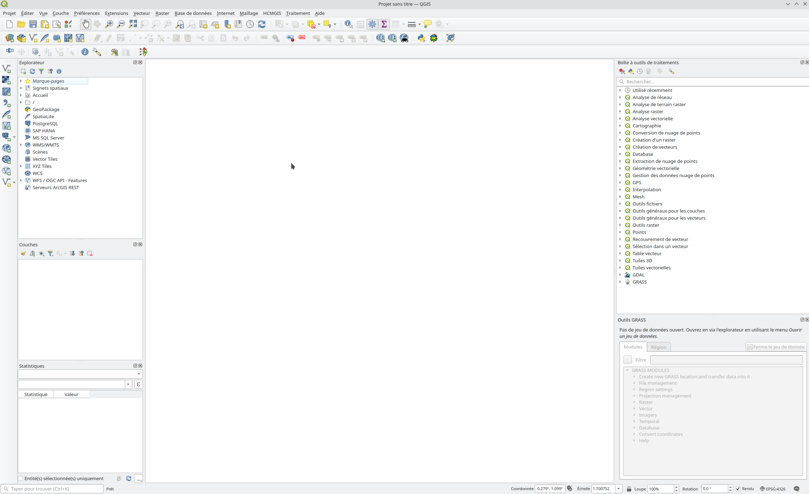
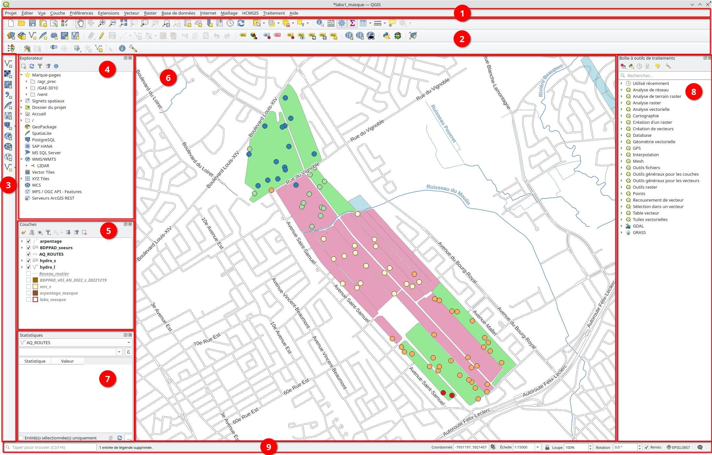
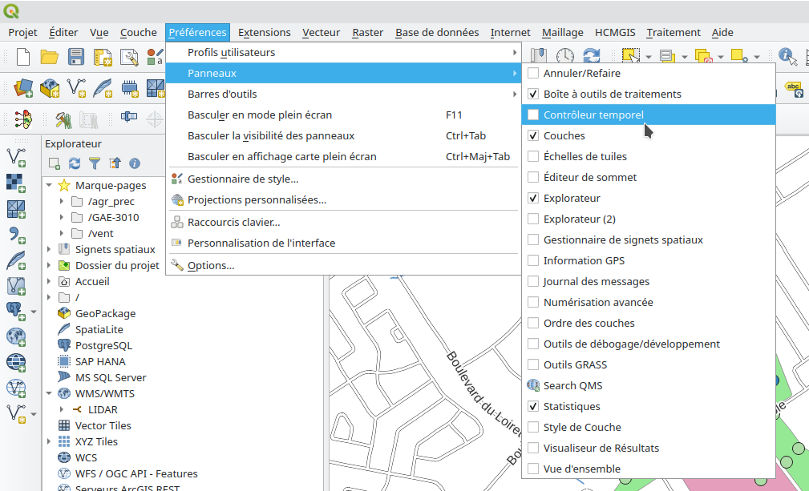

1 Introduction aux SIG
Objectifs spécifiques:
À la fin de ce chapitre, vous
- connaîtrez les 5 composantes principales des SIG
- aurez une version fonctionnelle de QGIS sur votre ordinateur personnel ou,
- aurez accès à QGIS sur un poste de travail virtuel
- aurez dans votre poche de nombreuses ressources sur les SIG à consulter durant la session et dans le futur.
Si on vous demande ce qu’est un SIG, plusieurs répondront sans doute qu’il s’agit d’un logiciel de cartographie. Or, la cartographie ne représente qu’un des nombreux aspect d’un SIG.
Les Systèmes d’information géographique (SIG) sont plutôt un ensemble de logiciels, d’outils et de méthodes portant sur l’acquisition, le stockage, l’analyse, la gestion et la restitution des données géographiques. Ils permettent notamment aux utilisateurs de contextualiser les données dans l’espace et de représenter efficacement l’information pour favoriser une prise de décision éclairée.
1.1 Les 5 composantes des SIG
On considère souvent que les SIG regroupent 5 composantes principales : Le matériel, les logiciels, les données, les personnes et les procédures.
1.1.1 Matériel
Le matériel regroupe tous les éléments physiques permettant l’acquisition, le stockage, le traitement ou l’affichage des données. On y retrouve par exemple :
Acquisition
- Les systèmes de géolocalisation (GPS)
- Le matériel d’acquisition (capteurs automatisés ou systèmes manuels)
- Les capteurs passifs (images multispectrales ou hyperspectrales, photographies, instruments de mesures environnementales)
- Les capteurs actifs (radar, lidar, pénétromètres)
- Le support (drones, tracteurs, avions, satellites)
- Acquisiteurs de données (ordinateurs, GPS, carnet de notes, datalogger)
Stockage
- Temporaire (cartes SD, clés USB, disques SATA/SSD)
- Long terme (serveurs, disques SATA/SSD, cartes ou photographies imprimées)
Traitement
- Ordinateur personnel vs serveur
- Certains dataloggers
- Processeur
- Cartes graphiques
Affichage
- Écrans
- Imprimantes
1.1.2 Logiciels
Plusieurs types de logiciels font partie de l’environnement des SIG.
1.1.2.1 Logiciels de SIG
Les logiciels de SIG sont multiples et diversifiés et permettent généralement de regrouper les données, les traitements et l’affichage en un seul logiciel. Ces logiciels sont centraux dans un SIG, et peuvent suffire à bien des utilisateurs en raison de leur polyvalence.
- QGIS / GRASS (opensource et gratuit)
- ArcGIS (propriétaire et payant)
- Google Earth (propriétaire et gratuit selon l’utilisation)
- AutoCAD Map 3D (propriétaire et payant)
1.1.2.2 Logiciels de gestion de bases de données à référence spatiale
Dans le cadre de ce cours, les données brutes vous seront fournies pour l’exécution de vos travaux, et le volume de données sera restreint. Toutefois, les données géospatiales peuvent rapidement devenir très volumineuse et l’utilisation d’une base de données à référence spatiale est alors indispensable pour bénéficier d’une stabilité, d’une structure et d’une rapidité accrue. Ce cours ne porte pas sur les bases de données à référence spatiale, mais voici tout de même deux exemples de logiciels souvent utilisés dans le domaine.
- PostgreSQL (avec l’ajout de l’extension PostGIS)
- Oracle
1.1.2.3 Logiciels d’analyse spatiale
L’analyse spatiale et le traitement d’images sont des domaines spécialisés. Il existe de nombreux logiciels permettant de répondre à différents objectifs. Voici quelques exemples.
- Géostatistiques : GS+ est un logiciel entièrement dédié aux géostatistiques. Si votre objectif est de pousser vos analyses de semivariogrammes en considérant par exemple l’anisotropie, ce logiciel est un excellent outil.
- Analyses d’images : En télédétection et en analyse d’images, on cherche souvent à effectuer des calculs entre les différentes bandes des images ou à faire une classification de la surface pour déterminer, par exemple, l’occupation du territoire ou le type de végétation. Des logiciels comme Catalyst (anciennement Geomatica) ou ENVI sont spécialisés dans ces opérations et intègrent de nombreux outils statistiques d’analyse d’images. Mention spéciale à Google Earth Engine qui permet l’acquisition et le traitement d’images satellites simplement directement sur le serveur par l’entremise de scripts
Javascriptdirectement dans votre navigateur. - Autres : De nombreux autres logiciels peuvent faire partie de votre environnement de SIG, tout dépendant des particularités de votre projet. Les logiciels de catalogage, de photogrammétrie, de serveur, ou même les logiciels spécialisés pour vos outils (ex. Loggernet) font partie de cette catégorie. De plus, différents langages de programmation permettent de plus en plus l’intégration des données géospatiales, notamment
R(R Spatial) oupython(Python GIS), à l’aide de librairies spécialisées contenant des outils d’analyse géospatiale.
1.1.3 Données
Les données sont le coeur des SIG. Elles constituent l’ensemble des informations, spatialisées ou non, contribuant au projet ou à la problématique.
Quelques exemples de données :
- Images satellites
- Réseau hydrique ou réseau routier
- Agricoles : Limites et identifiants des champs, type de culture, régie de culture, teneur en eau du sol, pédologie, etc.
- Tables de référence (taux d’application en fonction du pH, degrés jours, etc.)
- Données environnementales
- Mesures directes sur le terrain
Les données peuvent être sous différentes formes, que ce soit de simples notes dans un carnet ou sous forme informatique. Dans les prochains chapitres, vous apprendrez que les données géospatiales peuvent être au format vectoriel ou matriciel.
1.1.4 Personnes
Dans tout projet, plusieurs personnes doivent être considérées, et ont un usage différent des SIG.
- Gestionnaire : Responsable de la détermination et de l’atteinte des objectifs du projet.
- Analyste : Généralement la personne qui utilise les logiciels SIG et qui détermine les procédures à effectuer sur les données.
- Programmeur : Pour des projets plus élaborés, les programmeurs optimisent la base de données et l’environnement de travail. Ils permettent d’effectuer des analyses plus complexes ou sur des jeux de données plus volumineux.
- Fournisseur de données : Peuvent être externes (organismes gouvernementaux et les plateformes de données ouvertes, USGS pour les images satellitaires, etc.) ou internes (ex. technicien d’acquisition des données pour le projet)
- Utilisateur : L’utilisateur final des SIG. Il est important de considérer le niveau de connaissances de l’utilisateur dans les choix de communication. (ex. client, agronome, producteur, etc.)
1.1.5 Procédures
Il s’agit des étapes de traitements et d’analyses à effectuer sur les données et des méthodes de travail. Les procédures peuvent viser la transformation, l’analyse ou la communication des informations géospatiales.
1.2 Votre premier logiciel de SIG : QGIS
Dans le cadre de ce cours, nous utiliserons le logiciel QGIS (documentation). Il s’agit d’un logiciel libre (opensource) et gratuit à la fois assez complet et polyvalent.
« Logiciel libre » [free software] désigne des logiciels qui respectent la liberté des utilisateurs. En gros, cela veut dire que les utilisateurs ont la liberté d’exécuter, copier, distribuer, étudier, modifier et améliorer ces logiciels. Ainsi, « logiciel libre » fait référence à la liberté, pas au prix (pour comprendre ce concept, vous devez penser à « liberté d’expression », pas à « entrée libre »). - Projet GNU
QGIS permet une vaste étendue de traitements et d’analyses spatiales, ce qui en fait un bon candidat pour un premier apprentissage. On peut aussi utiliser GRASS avec QGIS et travailler directement en Python, ce qui le rend très polyvalent et adaptable à différents flux de travail. La connexion avec des bases de données, par exemple avec PostGreSQL et PostGIS, est simple, tout comme l’accès à des services web (WMS, WFS, fonds de carte, etc.). Les outils proposés durant ce cours sont aussi disponibles sous ArcGIS et portent souvent le même nom, si bien que l’apprentissage d’un premier logiciel rend plus aisé le transfert vers un autre dans le futur.
Il est à noter que bien qu’on puisse presque tout faire avec QGIS, le logiciel propriétaire ArcGIS demeure la référence à plusieurs niveaux dans l’industrie et, bien que très dispendieux, offre l’avantage d’un support technique et parfois d’une plus grande stabilité des outils proposés. Les outils d’analyse spatiale sont très avancés et fiables. La documentation d’ESRI (compagnie d’ArcGIS) est bien développée et demeure un document de référence utile à consulter dans votre flux de travail.
1.3 Installation et configuration
Les logiciels de SIG demandent beaucoup de ressources à votre ordinateur. Si vous disposez d’un ordinateur suffisamment performant, je vous suggère de faire l’installation de QGIS directement sur votre machine. Sinon, en étudiant à l’Université Laval, vous disposez d’un accès aux postes de travail virtuels (PTV) pour pouvoir travailler à distance sur le serveur de l’Université. Il existe plusieurs méthodes d’installation de QGIS. Je vous en propose 3, selon votre système d’exploitation et vos ambitions.
- Installateur OSGeo4W :fortement suggéré si vous êtes sous Windows
- Sous Linux ou MacOS (ou Windows), installation directe de QGIS et GRASS séparément
- Utilisation d’un poste de travail virtuel (si vous êtes étudiant à l’Université Laval)
- Bonus : Construction à partir des fichiers source ou binaires.
1.3.1 Installateur OSGeo4W
Si vous disposez d’un ordinateur avec un système d’exploitation Windows et des spécifications suffisantes (QGIS ne propose pas de spécifications minimales, mais certaines analyses spatiales peuvent être exigeantes et les données satellites peuvent être très volumineuses), l’installation suggérée est d’utiliser l’installateur OSGeo4W. Cela vous permet de faire une installation simultanée de QGIS, GDAL (qui contient des librairies d’analyses spatiales) et GRASS GIS, et est de loin la méthode la plus stable et la plus conviviale. Le mieux est d’installer tous les packages mentionnés ici, vous en aurez besoin à un moment ou à un autre.
Cette installation est simple, vous n’avez qu’à suivre les instructions et à télécharger la version qui vous convient à cette adresse.
1.3.2 Installation séparée de GRASS et QGIS
Si vous n’êtes pas sous windows, vous devrez installer chaque logiciel de façon séparée.
Lors de l’installation, il est souvent préférable de commencer par installer GRASS, puis ensuite installer QGIS; de cette façon, QGIS trouve tous les packages déjà installés avec GRASS, et les versions sont les bonnes. Le contraire peut entraîner de mauvaises surprises, et le mieux est souvent de prendre l’installation à zéro. Les instructions pour chaque distribution de Linux, ou pour MacOS, sont détaillés à cette adresse. Il est probable que vous ayez des erreurs lors de l’installation ou de la première ouverture de votre logiciel : Si c’est le cas, lisez attentivement les messages d’erreur, il est fort probable qu’il vous manque un package, qu’une version ne soit pas à jour ou qu’un fichier soit au mauvais endroit sur votre ordinateur (si par exemple vous avez déjà une installation de Python, il est possible que des conflits soient créés entre les versions). Internet devient alors votre meilleur ami pour trouver des solutions d’installation (ainsi que le forum du cours).
Une fois GRASS bien installé, vous pouvez passez à QGIS. Cette fois, suivez simplement les instructions officielles, et tout devrait bien aller (en principe).
1.3.3 Utilisation d’un Poste de Travail Virtuel (PTV)
Si, pour une raison ou une autre, vous ne pouvez pas ou ne voulez pas installer QGIS sur votre ordinateur personnel, la faculté de génie offre des postes de travail virtuels qui vous permettent d’ouvrir une session sur le serveur de l’Université (les autres facultés ont aussi pour la plupart des services similaires). Je vous invite à consulter directement la page du service LiberT et à suivre les instructions. Si vous éprouvez des difficultés, n’hésitez pas à contacter l’équipe de support technique.
1.3.4 Bonus : Compiler et installer les fichiers binaires
Je ne vous encourage pas à procéder de cette façon, mais une installation en compilant les fichiers binaires vous permet d’accéder aux outils les plus récents et ceux qui sont parfois en développement. Je ne donnerai pas ici les consignes d’installation, que vous trouverez facilement sur internet, parce que ce type d’installation est plus complexe et souffre parfois de problème de stabilité. Il est pertinent toutefois de savoir que cette méthode existe puisque si vous en venez un jour à développer des extensions et des outils d’analyse sur QGIS, vous risquez de travailler avec les versions en développement.
1.4 Tour d’horizon de l’interface
Lorsque vous lancez votre application, votre interface devrait ressembler à quelque chose comme ça.
Vous ne savez pas par où commencer? C’est normal. La première étape sera de configurer votre environnement de travail pour qu’il réponde à vos besoins, il peut différer du mien. Certains éléments sont toutefois des incontournables, par exemple l’explorateur de fichiers. Avant d’aller plus loin, voici une visite guidée de mon interface de travail personnelle.

1. Barre de menu
Prenez le temps d’explorer les différents onglets de cette barre. C’est ici que vous accéderez à la plupart des outils, que ce soit pour configurer votre environnement de travail, votre projet, pour générer une carte, afficher un fond de carte tiré d’internet (ex. Google Map) ou alors pour trouver des outils s’appliquant aux couches vectorielles (Vecteur) ou matricielles (Raster).
2. Outils rapides
Les outils les plus fréquents se retrouvent dans cette barre, notamment les outils de simple navigation (loupes, règles, etc.). La plupart des outils sont appliqués par défaut sur la couche présentement sélectionnée (dans la boîte 5 – Couches du projet). Vous pouvez rapidement sélectionner des attributs, ouvrir la calculatrice de champs, entrer en mode édition d’une couche et ajouter, modifier ou retirer des points, ajouter des étiquettes ou créer rapidement une nouvelle couche de donnée. Vous pouvez aussi accéder à la console python et travailler en python si vous êtes à l’aise avec ce langage, ou encore ajouter un service web (ex. WMS).
3. Gestionnaire des couches
Cette boîte permet en un clic d’ajouter des couches sur la carte. Vous pouvez accéder aux même outils dans l’onglet Couche du menu.
4. Explorateur de fichiers
L’explorateur vous permet d’accéder aux fichiers dans votre ordinateur. Vous pouvez y configurer des raccourcis pour accéder rapidement aux données d’un projet. Pour la plupart des données, il suffit de glisser la couche à partir de l’explorateur vers l’environnement pour importer rapidement dans votre projet une ou plusieurs couches de données à la fois.
5. Couches du projet
Cette boîte affiche les couches importées dans votre projet. Vous pouvez modifier l’ordre de superposition des couches en modifiant l’ordre dans cette liste, les couches en haut étant priorisées dans la superposition. Vous pouvez cocher ou décocher la case pour afficher ou non une couche. Un symbole représentant la symbologie est présent. Pour accéder aux informations d’une couche, il suffit de faire un clic droit sur celle-ci (consulter les propriétés, ouvrir la table d’attributs, modifier la symbologie, afficher ou modifier les étiquettes, etc.) Les options que vous consulterez le plus souvent sont : Zoomer sur la couche, ouvrir la table d’attribut et propriétés.
6. Environnement de travail
C’est ici que sont affichées vos couches. Plusieurs des outils rapides sont appliqués en cliquant directement sur l’environnement de travail. Pour une carte rapide, vous pouvez simplement faire une saisie d’écran de cet espace, mais la bonne pratique consiste plutôt à créer une nouvelle mise en page via l’onglet Projet du menu (à voir plus loin dans le laboratoire).
7. Outil statistique
Ici, vous pouvez rapidement choisir une couche et un champ d’attribut et y consulter les statistiques de base (Nombre, somme, moyenne, médiane, etc.) Cet outil est très utile pour les couches quantitatives (ex. arpentage dans ce laboratoire).
8. Barre à outils de traitements
Vous pouvez accéder ici à tous les outils de traitements pouvant être effectués sur des couches. Si vous connaissez le nom d’un outil, le plus simple est d’utiliser l’option Rechercher.
9. Barre d’état
La barre d’état au bas de l’écran vous permet de consulter et de modifier rapidement le SCR du projet (en bas à droite, via le bouton du code EPSG). Vous pouvez aussi fixer l’échelle, modifier l’orientation du Nord de la carte et visualiser les coordonnées ou les messages d’erreur.
Exercice : Personnalisez votre interface en ouvrant l’onglet Préférences (Figure 1.3) et en ajoutant les panneaux que vous souhaitez (vous pouvez copier mon interface pour le moment et l’ajuster dans le futur selon vos besoins).

1.5 Open Geospatial Consortium (OGC)
Au même titre que les normes ISO dans plusieurs domaines, il existe des normes et standards pour les données géospatiales et les SIG. L’organisme international responsable de diffuser ces normes est l’Open Geospatial consortium (OGC). Il n’est pas obligatoire de respecter ces normes, mais je vous suggère fortement de le faire. Cette pratique permet une meilleure interopérabilité entre les applications et vous évitera de nombreux maux de têtes dans le futur.
La fondation Open Source Geospatial Foundation propose plusieurs outils et logiciels (incluant ceux utilisés dans ce cours) qui respectent tous les normes de l’OGC.